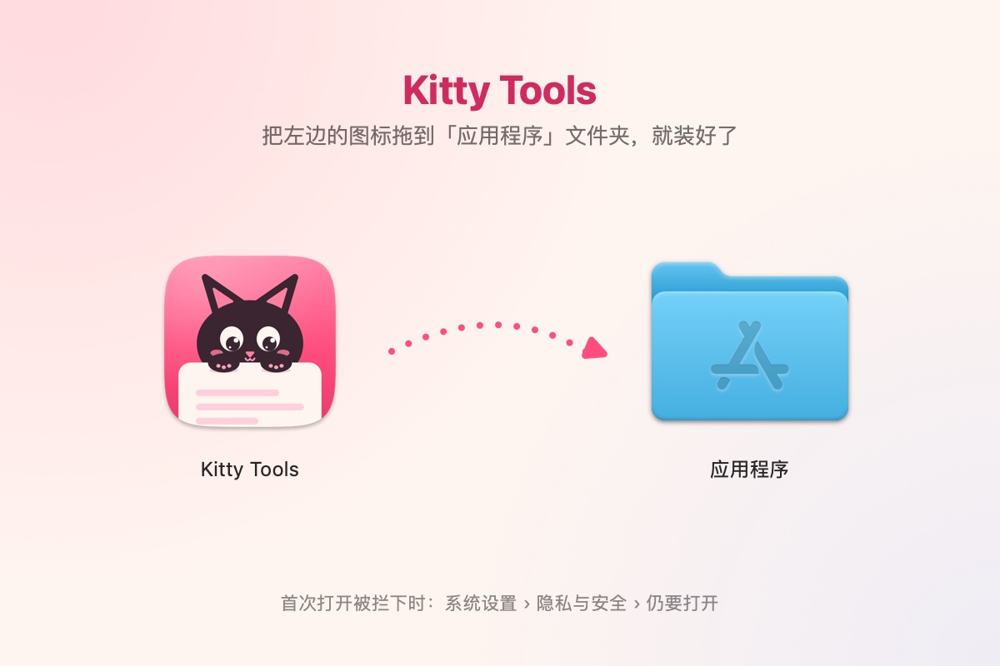

Download Kitty Tools
Free. The Mac and Windows versions are written separately, looking and working as much alike as they can. Once installed, new versions install from inside the app in one click.
Mac
Version · · See the GitHub releases page for the latest version
- Apple silicon (M1 or later) or Intel
- macOS 15 or later
The button downloads the Apple silicon version; on a Mac with Intel, download the Intel version. Not sure which you have? See here.
Your download has started. Follow the three steps below; if macOS blocks the app the first time you open it, see step 3.
Windows
Version · · See the GitHub releases page for the latest version
- Windows 11 (22H2 or later)
- x64 or ARM64
We picked the version for your PC; you can also choose: installer x64 · ARM64; portable zip x64 · ARM64
Your download has started. If you see “Windows protected your PC”, click “More info”, then “Run anyway”. The Windows version’s interface is in Chinese for now.
Installing on a Mac
Three steps. You only need to allow the app the first time; after that, new versions update from inside the app.
-
Drag Kitty Tools into Applications
Open the DMG you downloaded and drag Kitty Tools on the left onto the Applications folder on the right.
If an older app with the same name is installed, delete the old Kitty Tools from Applications first, or let Finder replace it.

-
The first time you open it, macOS blocks it
Double-click Kitty Tools in Applications and macOS says it was “Not Opened”. That’s because Kitty Tools isn’t notarized by Apple; its signature is valid, which is why the message doesn’t say it’s “damaged”. Click “Done” to close the message.
-
Click “Open Anyway” in System Settings
Open System Settings › Privacy & Security, scroll down to Security, click “Open Anyway” next to Kitty Tools, and enter your login password. The button stays available for about an hour after you tried to open the app; if it’s gone, double-click the app again.
Another way: use Terminal
Open Terminal, paste the line below and press Return; after that, the app opens with a double-click:
xattr -dr com.apple.quarantine "/Applications/Kitty Tools.app"Illustration; it looks slightly different in each version of macOS
Permissions it asks for the first time
First-run setup takes you through them one by one. Each permission is used only for what’s listed below, and everything else works without it.
- Accessibility
- Pasting what you picked back into your app, Translate Selection, replacing the original text with a translation, auto-scrolling in Scrolling Capture, showing keys while recording, Dock Preview, expanding snippets by keyword, and showing volume and brightness on the notch.
- Screen Recording
- Screenshot, Translate Screenshot, Capture Text, Scrolling Capture, Record Screen, recording system audio, and Dock Preview thumbnails. You may need to reopen the app after allowing it.
- Microphone
- Recording your voice with Record Screen and Record Audio. Asked only the first time it’s needed.
- Files and Folders
- Requested only when the Launcher searches files.
- Full Disk Access (optional)
- Only needed to search Safari bookmarks and history from the Launcher.
- Calendars (optional)
- Asked only when you turn on Next Event for the Notch.
- Input Monitoring (optional)
- Only when the Key Remapping plugin remaps letters, numbers and similar keys.
After a new install or a major macOS update, the system has to prepare a text recognition model before the first recognition, which takes about a minute; the app does this in the background once it starts.
Updating
When a new version is out, the menu bar shows “Update to x.y.z…”; you can also click “Update and Relaunch” in Settings › About. It updates in one click, with no need to allow it again. To update by hand, download the new DMG and install it over the old one.
See what changed in each version in the Release Notes.
Uninstalling
Right-click the cat in the menu bar, choose Quit, then drag Kitty Tools from Applications to the Trash.
To remove its data too, delete ~/Library/Application Support/com.yy.kitty-tools.native (Clipboard History, notes, Screenshot History and backups are all here; Settings › General can show it in Finder) and ~/Library/Preferences/com.yy.kitty-tools.native.plist. Translation service keys are in Keychain Access under the name com.yy.kitty-tools.native.
Installing on Windows
- Download the installer (the ARM64 one for PCs with an ARM processor) and run it.
- If you see “Windows protected your PC”, click “More info”, then “Run anyway”.
- It installs to
%LOCALAPPDATA%\Programs\Kitty Toolsby default, without administrator rights, and updates itself from then on.
Prefer not to install? Download the zip, extract it anywhere and run KittyTools.exe.
Uninstalling on Windows
Settings › Apps › Installed apps › Kitty Tools › Uninstall.
What’s in the Windows version
Clipboard History, Translate, Launcher, Screenshot (with Scrolling Capture and Screenshot History), screen and audio recording, Notes, Reminders, Status Screen and Home. Launchpad, Dock Preview, Finder Menu and the Notch are Mac only for now, and the Windows interface is in Chinese for now.
Earlier versions, checksums and the full notes for each version are on the GitHub releases page. If downloads are slow, see the FAQ.